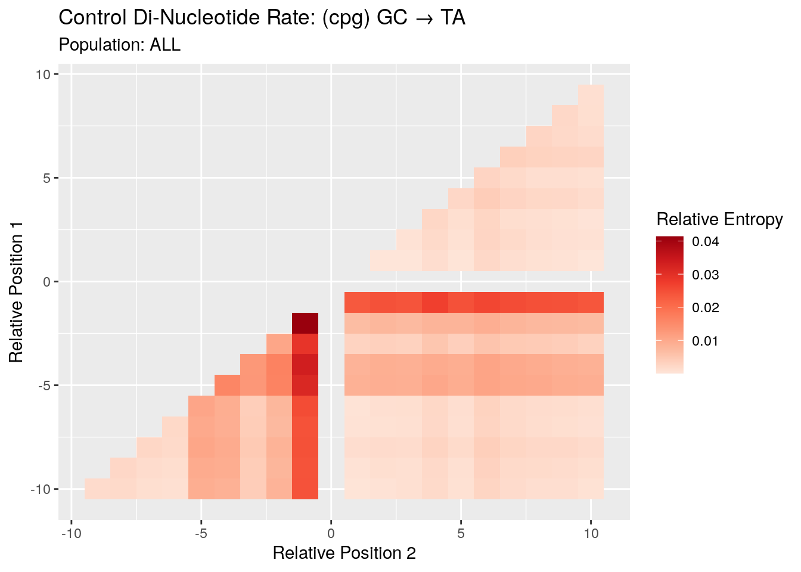
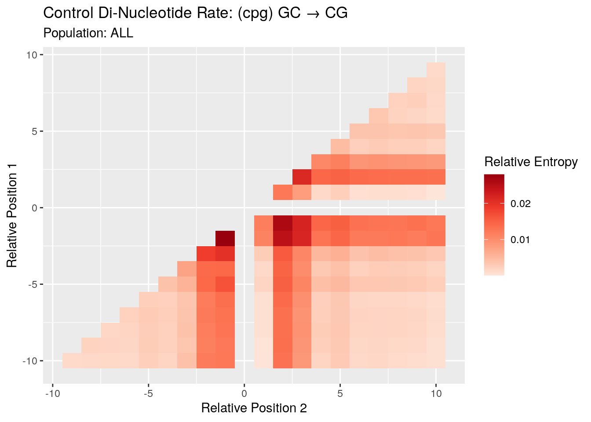
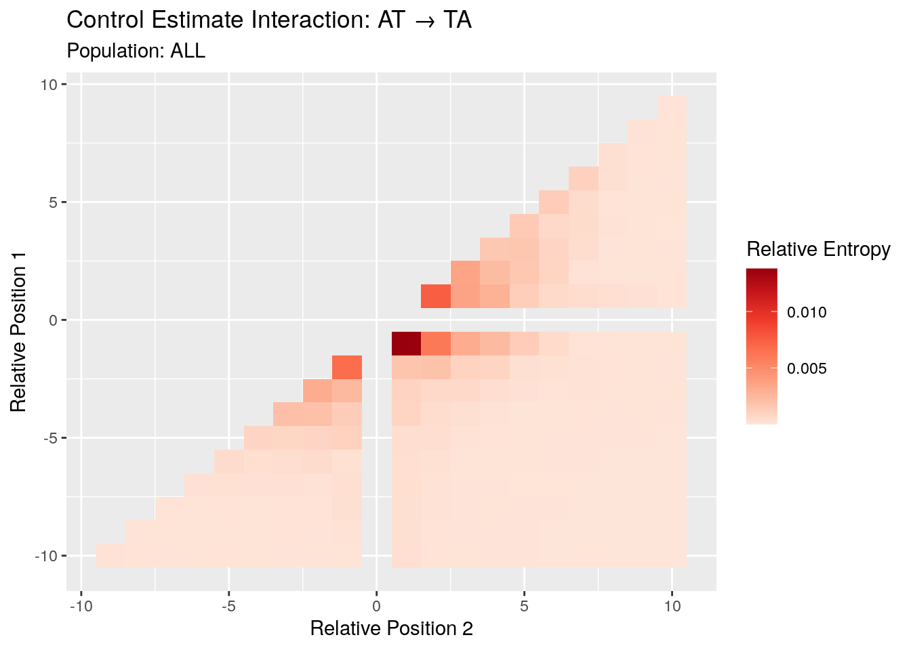
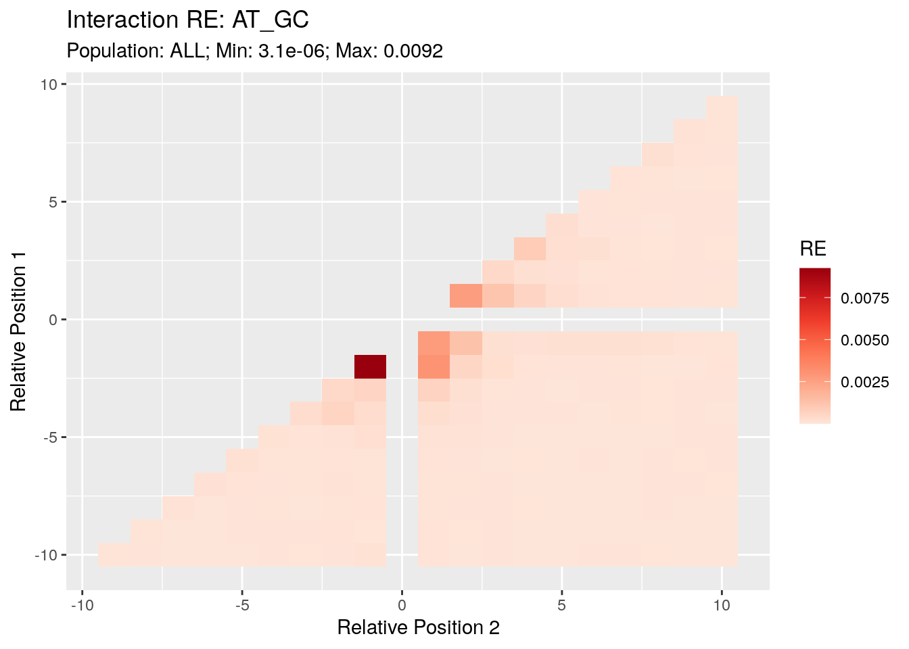
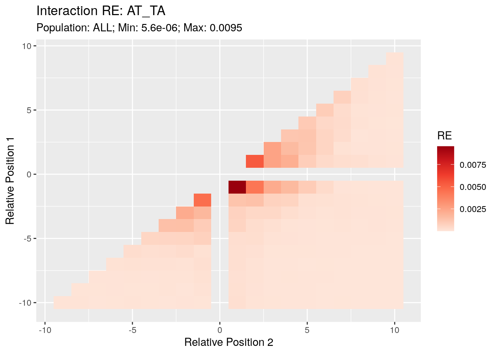
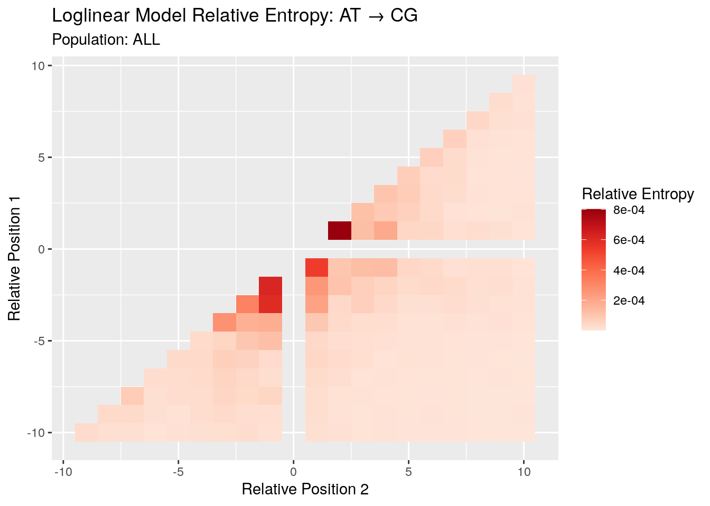
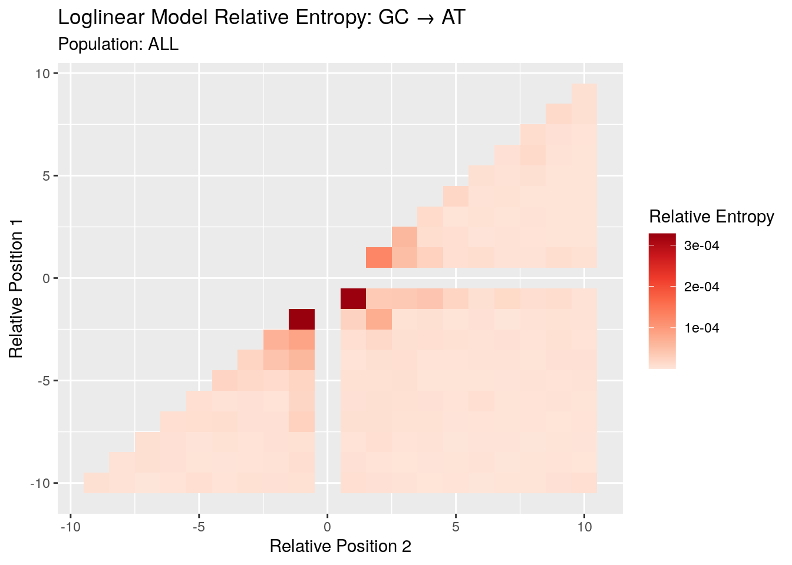

1000G_two_positions_ALL
Andy Beck
2021-11-01
Last updated: 2022-04-21
Checks: 7 0
Knit directory: LSCI/
This reproducible R Markdown analysis was created with workflowr (version 1.7.0). The Checks tab describes the reproducibility checks that were applied when the results were created. The Past versions tab lists the development history.
Great! Since the R Markdown file has been committed to the Git repository, you know the exact version of the code that produced these results.
Great job! The global environment was empty. Objects defined in the global environment can affect the analysis in your R Markdown file in unknown ways. For reproduciblity it’s best to always run the code in an empty environment.
The command set.seed(20211101) was run prior to running the code in the R Markdown file. Setting a seed ensures that any results that rely on randomness, e.g. subsampling or permutations, are reproducible.
Great job! Recording the operating system, R version, and package versions is critical for reproducibility.
Nice! There were no cached chunks for this analysis, so you can be confident that you successfully produced the results during this run.
Great job! Using relative paths to the files within your workflowr project makes it easier to run your code on other machines.
Great! You are using Git for version control. Tracking code development and connecting the code version to the results is critical for reproducibility.
The results in this page were generated with repository version 491010c. See the Past versions tab to see a history of the changes made to the R Markdown and HTML files.
Note that you need to be careful to ensure that all relevant files for the analysis have been committed to Git prior to generating the results (you can use wflow_publish or wflow_git_commit). workflowr only checks the R Markdown file, but you know if there are other scripts or data files that it depends on. Below is the status of the Git repository when the results were generated:
Ignored files:
Ignored: .Rhistory
Ignored: .Rproj.user/
Ignored: analysis/disqus.html
Ignored: code/random/
Untracked files:
Untracked: 1000G_single_position_ALL-tikzDictionary
Untracked: code/two_pos_functions.R
Untracked: output/tikz/
Unstaged changes:
Modified: .gitignore
Modified: analysis/1000G_single_postion_comp.Rmd
Modified: analysis/1000G_two_postions_comp.Rmd
Modified: analysis/BRIDGES_summary_stats.Rmd
Modified: analysis/BRIDGES_two_positions.Rmd
Modified: code/single_pos_functions.R
Note that any generated files, e.g. HTML, png, CSS, etc., are not included in this status report because it is ok for generated content to have uncommitted changes.
These are the previous versions of the repository in which changes were made to the R Markdown (analysis/1000G_two_positions_ALL.Rmd) and HTML (docs/1000G_two_positions_ALL.html) files. If you’ve configured a remote Git repository (see ?wflow_git_remote), click on the hyperlinks in the table below to view the files as they were in that past version.
| File | Version | Author | Date | Message |
|---|---|---|---|---|
| Rmd | 491010c | Andy Beck | 2022-04-21 | wflow_publish(c("analysis/1000G_single_position_ALL.Rmd", "analysis/1000G_two_positions_ALL.Rmd")) |
| html | 86380a3 | Andy Beck | 2022-01-26 | Build site. |
| Rmd | cccdcf5 | Andy Beck | 2022-01-26 | wflow_publish(c("analysis/1000G_two_positions_ALL.Rmd")) |
| html | 4643ea1 | Andy Beck | 2022-01-20 | Build site. |
| Rmd | b205f47 | Andy Beck | 2022-01-20 | wflow_publish(c("analysis/1000G_two_positions_ALL.Rmd", "analysis/1000G_two_postions_comp.Rmd")) |
| html | bcee610 | Andy Beck | 2021-11-09 | update site to include disqus |
| html | 0fdbed8 | Andy Beck | 2021-11-08 | Build site. |
| Rmd | 27276db | Andy Beck | 2021-11-08 | Add subsection header |
| html | ac3b368 | Andy Beck | 2021-11-08 | Build site. |
| Rmd | d08318e | Andy Beck | 2021-11-08 | Add two position model results |
| html | 1454310 | Andy Beck | 2021-11-02 | Build site. |
| Rmd | 6842cad | Andy Beck | 2021-11-01 | flesh out some pages |
| html | 6842cad | Andy Beck | 2021-11-01 | flesh out some pages |
1000G Two Position Models
Introduction
In a previous document we evaluated the influence of individual positions on the mutation rate as a function of relative position. In this we marginalized over the nucleotides at other positions, ignoring any potential interaction effect. Here in this document we will being to explore the extent to which interactions among flanking positions influence the rate of substitution at a focal site by first focusing on two-way interactions.
Challenges we face here are:
- We know that the marginal distributions at single positions in our control samples (and the genome-wide background rate) don’t match corresponding marginals in the singletons
- When considering the 2-way contingency table at each pair of positions, the row and column marginals don’t predict the observed 4x4 cells in the genome-wide and control counts (i.e. the nucleotides at the two positions are not independent)
Chi-Square Test of Independence
For this analysis we’ll be looking at only our singleton counts. For each sub type at each pair of positions we observe a 4x4 2-way contingency table. Performing a chi square test of independence asks if we have evidence to reject the null hypothesis that the two “variables” (sites) are independent; i.e. the number of times we see AA is the product of the row marginal for A and the column marginal for A, etc.
First let’s write the code to generate the 4x4 contingency table at a single pair of positions for a sub type:
chi_sq_ind_pair <- function(population, subtype, p1, p2){
data_dir <- "/net/snowwhite/home/beckandy/research/1000G_LSCI/output/all_count_2_pos/"
f_name <- paste0(data_dir, population, "/", subtype, "_p", p1, "_q", p2, ".csv")
df <- read_csv(f_name, col_types = cols()) %>%
filter(singletons > 0)
df_tab <- xtabs(singletons ~ p1 + p2, data = df)
return(df_tab)
}And then we’ll want code to get the statistic at each pair of positions for a sub type:
chi_sq_ind_all <- function(population, subtype){
final <- data.frame(p1 = numeric(),
p2 = numeric(),
statistic = numeric())
for(i in c(-10:-1,1:9)){
for(j in (i+1):10){
if(j == 0) next
df_tab <- chi_sq_ind_pair(population, subtype, i, j)
stat_val <- chisq.test(df_tab)$statistic %>% unname()
final <- bind_rows(final, data.frame(p1 = i,
p2 = j,
statistic = stat_val))
}
}
return(final)
}Naturally we’ll want to plot these results to see what patterns we observe across pairs of positions:
chi_sq_ind_plot <- function(population, subtype){
df <- chi_sq_ind_all(population, subtype)
subtype2 <- str_replace(subtype, "_", " -> ")
p <- df %>%
ggplot(aes(x = p2, y = p1, fill = statistic)) +
geom_tile() +
ggtitle(paste0("Chi-Sq Test of Independence: ", subtype2),
paste0("Population: ", population,
"; Min: ", round(min(df$statistic), 2),
"; Max: ", round(max(df$statistic), 2)))+
xlab("Relative Position 2") +
ylab("Relative Position 1") +
labs(fill = "Chi Square Statistic") +
scale_fill_distiller(palette = "Reds", direction = 1)
return(p)
}
Goodness of Fit: Estimate Distribution with Controls
I don’t agree with this approach whatsoever, but Jun wants it.
The idea here is to estimate the frequency of flanking dimers using the dimers we observe flanking control positions. This ignores the fact that the distribution of individual flanking nucleotides has already been shown to differ between the singletons and the matched controls; what I think we want is a way to test for an interaction while accounting for the different individual marginals.
But anyways, here’s the code to get the chi square GOF statistic for a given sub type at a pair of positions:
chi_sq_gof_pair <- function(population, subtype, p1, p2) {
data_dir <- "/net/snowwhite/home/beckandy/research/1000G_LSCI/output/all_count_2_pos/"
f_name <- paste0(data_dir, population, "/", subtype, "_p", p1, "_q", p2, ".csv")
df <- read_csv(f_name, col_types = cols()) %>%
filter(singletons > 0)
df$p_c <- df$controls / sum(df$controls)
df$e_s <- sum(df$singletons) * df$p_c
df$chi_res <- (df$e_s - df$singletons)^2 / df$e_s
df$p_s <- df$singletons / sum(df$singletons)
df$kl_res <- df$p_s * log(df$p_s / df$p_c)
return(sum(df$chi_res))
}Naturally we will want this statistic for each population/subtype pair across all pairs of flanking positions:
chi_sq_gof_all <- function(population, subtype){
final <- data.frame(p1 = numeric(),
p2 = numeric(),
statistic = numeric())
for(i in c(-10:-1,1:9)){
for(j in (i+1):10){
if(j == 0) next
stat_val <- chi_sq_gof_pair(population, subtype, i, j)
final <- bind_rows(final, data.frame(p1 = i,
p2 = j,
statistic = stat_val))
}
}
return(final)
}Oh, I know, let’s make plots as well!
chi_sq_gof_plot <- function(population, subtype){
df <- chi_sq_gof_all(population, subtype)
subtype2 <- str_replace(subtype, "_", " -> ")
p <- df %>%
ggplot(aes(x = p2, y = p1, fill = statistic)) +
geom_tile() +
ggtitle(paste0("Control Distribution GOF: ", subtype2),
paste0("Population: ", population,
"; Min: ", round(min(df$statistic), 2),
"; Max: ", round(max(df$statistic), 2)))+
xlab("Relative Position 2") +
ylab("Relative Position 1") +
labs(fill = "Chi Square Statistic") +
scale_fill_distiller(palette = "Reds", direction = 1) +
theme_classic()
return(p)
}AT_CG
subtype <- "AT_CG"
p <- chi_sq_gof_plot("ALL", subtype)
print(p)
| Version | Author | Date |
|---|---|---|
| ac3b368 | Andy Beck | 2021-11-08 |
AT_GC
subtype <- "AT_GC"
p <- chi_sq_gof_plot("ALL", subtype)
print(p)
| Version | Author | Date |
|---|---|---|
| ac3b368 | Andy Beck | 2021-11-08 |
AT_TA
subtype <- "AT_TA"
p <- chi_sq_gof_plot("ALL", subtype)
print(p)
| Version | Author | Date |
|---|---|---|
| ac3b368 | Andy Beck | 2021-11-08 |
GC_AT
subtype <- "GC_AT"
p <- chi_sq_gof_plot("ALL", subtype)
print(p)
| Version | Author | Date |
|---|---|---|
| ac3b368 | Andy Beck | 2021-11-08 |
GC_TA
subtype <- "GC_TA"
p <- chi_sq_gof_plot("ALL", subtype)
print(p)
| Version | Author | Date |
|---|---|---|
| ac3b368 | Andy Beck | 2021-11-08 |
GC_CG
subtype <- "GC_CG"
p <- chi_sq_gof_plot("ALL", subtype)
print(p)
| Version | Author | Date |
|---|---|---|
| ac3b368 | Andy Beck | 2021-11-08 |
Loglinear Models
The above analyses told us that, in general, the joint distribution of the cell counts in the 4x4 contingency table was not the product of the row and column marginals. This is unsurprising since we see this exact same pattern in both the genome-wide counts and the control counts. That is, it is already well-known that genome-wide occurrence of dinucleotides is not predicted by the product of the frequencies of the individual nucleotides, so it’s no surprise we see an interaction in our singletons. But is the interaction we see in the singletons the same that we observe in the controls? That question can be addressed using the log-linear modeling framework employed by Zhu et al (2017). Here, we’ll fit a model of the counts for both the singletons and the controls, allowing for each to have their own marginal distributions at each position, but the interaction between the two positions is shared. We then use the deviance statistic to compare the fit of this model to the fully saturated model which allows for different interaction terms between the singletons and the controls.
deviance_pair <- function(population, subtype, p1, p2){
data_dir <- "/net/snowwhite/home/beckandy/research/1000G_LSCI/output/all_count_2_pos/"
f_name <- paste0(data_dir, population, "/", subtype, "_p", p1, "_q", p2, ".csv")
df <- read_csv(f_name, col_types = cols()) %>%
filter(singletons > 0) %>%
select(p1, p2, singletons, controls) %>%
gather(status, n, singletons:controls)
mod_obj <- glm(n ~ (p1 + p2 + status)^2, data = df, family = poisson())
return(mod_obj %>% deviance)
}
deviance_pair_re <- function(population, subtype, p1, p2){
data_dir <- "/net/snowwhite/home/beckandy/research/1000G_LSCI/output/all_count_2_pos/"
f_name <- paste0(data_dir, population, "/", subtype, "_p", p1, "_q", p2, ".csv")
df <- read_csv(f_name, col_types = cols()) %>%
filter(singletons > 0) %>%
select(p1, p2, singletons, controls) %>%
gather(status, n, singletons:controls)
mod_obj <- glm(n ~ (p1 + p2 + status)^2, data = df, family = poisson())
df$res <- residuals(mod_obj) ^ 2
n_singletons <- df %>% filter(status=="singletons") %>% pull(n) %>% sum()
n_controls <- df %>% filter(status=="controls") %>% pull(n) %>% sum()
df <- df %>%
rowwise() %>%
mutate(re.res = ifelse(status == "singletons", (res / (2*n_singletons)), (res / (2*n_controls)) ))
re <- sum(df$re.res)
return(re)
}
deviance_all <- function(population, subtype, r_start = 1){
final <- data.frame(p1 = numeric(),
p2 = numeric(),
statistic = numeric())
for(i in c(-10:-1,r_start:9)){
for(j in (i+1):10){
if(j == 0) next
if(j == 1 & r_start > 1) next
stat_val <- deviance_pair(population, subtype, i, j)
final <- bind_rows(final, data.frame(p1 = i,
p2 = j,
statistic = stat_val))
}
}
return(final)
}
re_all <- function(population, subtype, r_start = 1){
final <- data.frame(p1 = numeric(),
p2 = numeric(),
statistic = numeric())
for(i in c(-10:-1,r_start:9)){
for(j in (i+1):10){
if(j == 0) next
if(j == 1 & r_start > 1) next
stat_val <- deviance_pair_re(population, subtype, i, j)
final <- bind_rows(final, data.frame(p1 = i,
p2 = j,
statistic = stat_val))
}
}
return(final)
}
deviance_plot <- function(population, subtype, r_start = 1){
df <- deviance_all(population, subtype, r_start) %>% drop_na()
p <- df %>%
ggplot(aes(x = p2, y = p1, fill = statistic)) +
geom_tile() +
ggtitle(paste0("Deviance Interaction Test: ", subtype),
paste0("Population: ", population,"; Min: ", round(min(df$statistic), 2), "; Max: ", round(max(df$statistic), 2)))+
xlab("Relative Position 2") +
ylab("Relative Position 1") +
labs(fill = "Deviance") +
scale_fill_distiller(palette = "Reds", direction = 1)
return(p)
}
deviance_re_plot <- function(population, subtype, r_start = 1){
df <- re_all(population, subtype, r_start) %>% drop_na()
p <- df %>%
ggplot(aes(x = p2, y = p1, fill = statistic)) +
geom_tile() +
ggtitle(paste0("Interaction RE: ", subtype),
paste0("Population: ", population,"; Min: ", signif(min(df$statistic), 2), "; Max: ", signif(max(df$statistic), 2)))+
xlab("Relative Position 2") +
ylab("Relative Position 1") +
labs(fill = "RE") +
scale_fill_distiller(palette = "Reds", direction = 1)
return(p)
}AT_CG

AT_GC

AT_TA

GC_AT

cpg_GC_AT

GC_TA

cpg_GC_TA


GC_CG

cpg_GC_CG

Di-nucleotide Residuals
Similar to what we investigated in the single model case, here we look into each pair of position’s deviance/RE result and break it down into the contributions from each pair of nucleotides. Here we have a challenge that we did not have in the single position case: for each pair of nucleotides we have two residuals: one for the fitted singleton value, and the other for the fitted control count. While they are both used to calculate the overall statistic for the position, for this first approach I am only going to look at the dinucleotide residuals for the singleton fitted values. This is because I find this case to be more straightforward in regards to assigning a sign and interpreting (i.e., do we observe more XY in the singletons than expected? etc.)
First let’s get the single-position level residuals for a given sub type and population:
get_residuals_re <- function(subtype, population, p1, p2){
data_dir <- "/net/snowwhite/home/beckandy/research/1000G_LSCI/output/all_count_2_pos/"
f_name <- paste0(data_dir, population, "/", subtype, "_p", p1, "_q", p2, ".csv")
df <- read_csv(f_name, col_types = cols()) %>%
filter(singletons > 0) %>%
select(p1, p2, singletons, controls) %>%
gather(status, n, singletons:controls)
mod_obj <- glm(n ~ (p1 + p2 + status)^2, data = df, family = poisson())
df$res <- residuals(mod_obj) ^ 2
df$fit <- predict(mod_obj, type = "response")
n_singletons <- df %>% filter(status=="singletons") %>% pull(n) %>% sum()
n_controls <- df %>% filter(status=="controls") %>% pull(n) %>% sum()
df <- df %>%
rowwise() %>%
mutate(re.res = ifelse(status == "singletons", (res / (2*n_singletons)), (res / (2*n_controls)) ))
df <- df %>%
filter(status == "singletons") %>%
mutate(dir = sign(n - fit)) %>%
mutate(s.res = re.res * dir) %>%
ungroup() %>%
mutate(prop.res = sqrt(res) / sum(sqrt(res))) %>%
arrange(desc(res))
return(df)
}Now, as an example let’s look at the residuals for the A>G sub type at the -2, -1 positions:
get_residuals_re("AT_GC", "ALL", -2, -1) %>%
knitr::kable()| p1 | p2 | status | n | res | fit | re.res | dir | s.res | prop.res |
|---|---|---|---|---|---|---|---|---|---|
| C | A | singletons | 1504194 | 67046.22613 | 1208568.6 | 0.0024488 | 1 | 0.0024488 | 0.1732595 |
| C | C | singletons | 1069119 | 65582.98838 | 1356210.8 | 0.0023954 | -1 | -0.0023954 | 0.1713584 |
| A | C | singletons | 1218930 | 26111.23668 | 1049122.1 | 0.0009537 | 1 | 0.0009537 | 0.1081244 |
| A | A | singletons | 1246030 | 24974.74913 | 1430857.9 | 0.0009122 | -1 | -0.0009122 | 0.1057452 |
| C | G | singletons | 64649 | 21941.86679 | 109954.8 | 0.0008014 | -1 | -0.0008014 | 0.0991167 |
| T | C | singletons | 925793 | 11624.76977 | 825890.5 | 0.0004246 | 1 | 0.0004246 | 0.0721443 |
| G | A | singletons | 633750 | 7982.57238 | 707561.7 | 0.0002916 | -1 | -0.0002916 | 0.0597835 |
| T | T | singletons | 869379 | 4972.60515 | 936797.0 | 0.0001816 | -1 | -0.0001816 | 0.0471848 |
| G | T | singletons | 669774 | 4604.49110 | 615764.6 | 0.0001682 | 1 | 0.0001682 | 0.0454047 |
| T | A | singletons | 611645 | 2150.24768 | 648630.8 | 0.0000785 | -1 | -0.0000785 | 0.0310280 |
| A | G | singletons | 819729 | 1855.45979 | 781345.3 | 0.0000678 | 1 | 0.0000678 | 0.0288228 |
| C | T | singletons | 1163980 | 1186.76523 | 1127207.7 | 0.0000433 | 1 | 0.0000433 | 0.0230511 |
| A | T | singletons | 1110832 | 484.61429 | 1134195.7 | 0.0000177 | -1 | -0.0000177 | 0.0147302 |
| G | C | singletons | 705354 | 435.48575 | 687972.5 | 0.0000159 | 1 | 0.0000159 | 0.0139636 |
| T | G | singletons | 567955 | 35.86432 | 563453.7 | 0.0000013 | 1 | 0.0000013 | 0.0040072 |
| G | G | singletons | 508288 | 11.56687 | 505867.1 | 0.0000004 | 1 | 0.0000004 | 0.0022757 |
Here we see that among the two position influences the biggest difference between the singleton and the control distributions was for the CA dinucleotide; this is the same as what Zhu et al (2017) observed at this position for this sub type. Let’s take a look at what happens if we summarize each pair of positions by the sum of the two re/deviance residuals instead of just ignoring the control residual:
get_residuals_re2 <- function(subtype, population, p1, p2){
data_dir <- "/net/snowwhite/home/beckandy/research/1000G_LSCI/output/all_count_2_pos/"
f_name <- paste0(data_dir, population, "/", subtype, "_p", p1, "_q", p2, ".csv")
df <- read_csv(f_name, col_types = cols()) %>%
filter(singletons > 0) %>%
select(p1, p2, singletons, controls) %>%
gather(status, n, singletons:controls)
mod_obj <- glm(n ~ (p1 + p2 + status)^2, data = df, family = poisson())
df$res <- residuals(mod_obj) ^ 2
df$fit <- predict(mod_obj, type = "response")
n_singletons <- df %>% filter(status=="singletons") %>% pull(n) %>% sum()
n_controls <- df %>% filter(status=="controls") %>% pull(n) %>% sum()
df <- df %>%
rowwise() %>%
mutate(re.res = ifelse(status == "singletons", (res / (2*n_singletons)), (res / (2*n_controls)) ))
df <- df %>%
select(p1, p2, re.res) %>%
group_by(p1, p2) %>%
summarize(re.res = sum(re.res)) %>%
ungroup() %>%
mutate(prop.re = re.res / sum(re.res)) %>%
arrange(desc(re.res))
return(df)
}Here again we see that the top contribution for any dinucleotide pair is CT at the -2, -1 positions when we account for both the singleton and the control residuals:
get_residuals_re2("AT_GC", "ALL", -2, -1) %>%
knitr::kable()`summarise()` has grouped output by 'p1'. You can override using the `.groups`
argument.| p1 | p2 | re.res | prop.re |
|---|---|---|---|
| C | A | 0.0025912 | 0.2804169 |
| C | C | 0.0025376 | 0.2746151 |
| A | C | 0.0009988 | 0.1080905 |
| A | A | 0.0009431 | 0.1020622 |
| C | G | 0.0008316 | 0.0899985 |
| T | C | 0.0004397 | 0.0475814 |
| G | A | 0.0003006 | 0.0325263 |
| T | T | 0.0001882 | 0.0203663 |
| G | T | 0.0001758 | 0.0190270 |
| T | A | 0.0000806 | 0.0087263 |
| A | G | 0.0000699 | 0.0075653 |
| C | T | 0.0000465 | 0.0050332 |
| A | T | 0.0000186 | 0.0020080 |
| G | C | 0.0000165 | 0.0017909 |
| T | G | 0.0000013 | 0.0001451 |
| G | G | 0.0000004 | 0.0000470 |
Perhaps we’d like to visualize these results in a heatmap?
heatmap_re_res <- function(subtype, pop, p1, p2, singletons_only = TRUE){
if(singletons_only){
df <- get_residuals_re(subtype, pop, p1, p2)
} else {
df <- get_residuals_re2(subtype, pop, p1, p2)
}
p <- df %>%
ggplot(aes(x = p2, y = p1, fill = re.res)) +
geom_tile() +
ggtitle(paste0("Interaction RE: ", subtype),
paste0("Population: ", pop))+
xlab(paste0("Relative Position: ", p2)) +
ylab(paste0("Relative Position: ", p1)) +
labs(fill = "RE Residual") +
scale_fill_distiller(palette = "Reds", direction = 1)
return(p)
}
heatmap_signed_re_res <- function(subtype, pop, p1, p2){
df <- get_residuals_re(subtype, pop, p1, p2)
p <- df %>%
ggplot(aes(x = p2, y = p1, fill = s.res)) +
geom_tile() +
ggtitle(paste0("Interaction RE: ", subtype),
paste0("Population: ", pop))+
xlab(paste0("Relative Position: ", p2)) +
ylab(paste0("Relative Position: ", p1)) +
labs(fill = "RE Residual") +
scale_fill_distiller(palette = "RdBu", direction = -1)
return(p)
}And now we plot the signed re residuals for the A>G sub type:
heatmap_signed_re_res("AT_GC", "ALL", -2, -1)
sessionInfo()R version 4.1.3 (2022-03-10)
Platform: x86_64-pc-linux-gnu (64-bit)
Running under: Ubuntu 18.04.6 LTS
Matrix products: default
BLAS: /usr/lib/x86_64-linux-gnu/openblas/libblas.so.3
LAPACK: /usr/lib/x86_64-linux-gnu/libopenblasp-r0.2.20.so
locale:
[1] LC_CTYPE=en_US.UTF-8 LC_NUMERIC=C
[3] LC_TIME=en_US.UTF-8 LC_COLLATE=en_US.UTF-8
[5] LC_MONETARY=en_US.UTF-8 LC_MESSAGES=en_US.UTF-8
[7] LC_PAPER=en_US.UTF-8 LC_NAME=C
[9] LC_ADDRESS=C LC_TELEPHONE=C
[11] LC_MEASUREMENT=en_US.UTF-8 LC_IDENTIFICATION=C
attached base packages:
[1] stats graphics grDevices utils datasets methods base
other attached packages:
[1] tikzDevice_0.12.3.1 forcats_0.5.1 stringr_1.4.0
[4] dplyr_1.0.8 purrr_0.3.4 readr_2.1.2
[7] tidyr_1.2.0 tibble_3.1.6 ggplot2_3.3.5
[10] tidyverse_1.3.1 workflowr_1.7.0
loaded via a namespace (and not attached):
[1] httr_1.4.2 sass_0.4.0 bit64_4.0.5 vroom_1.5.7
[5] jsonlite_1.7.3 modelr_0.1.8 bslib_0.3.1 assertthat_0.2.1
[9] getPass_0.2-2 highr_0.9 cellranger_1.1.0 yaml_2.2.2
[13] pillar_1.7.0 backports_1.4.1 glue_1.6.1 digest_0.6.29
[17] RColorBrewer_1.1-2 promises_1.2.0.1 rvest_1.0.2 colorspace_2.0-2
[21] htmltools_0.5.2 httpuv_1.6.5 pkgconfig_2.0.3 broom_0.8.0
[25] haven_2.4.3 scales_1.1.1 processx_3.5.2 whisker_0.4
[29] later_1.3.0 tzdb_0.2.0 git2r_0.29.0 generics_0.1.2
[33] farver_2.1.0 ellipsis_0.3.2 withr_2.4.3 cli_3.1.1
[37] magrittr_2.0.2 crayon_1.4.2 readxl_1.3.1 evaluate_0.14
[41] ps_1.6.0 fs_1.5.2 fansi_1.0.2 xml2_1.3.3
[45] tools_4.1.3 hms_1.1.1 lifecycle_1.0.1 munsell_0.5.0
[49] reprex_2.0.1 callr_3.7.0 compiler_4.1.3 jquerylib_0.1.4
[53] rlang_1.0.1 grid_4.1.3 rstudioapi_0.13 filehash_2.4-2
[57] labeling_0.4.2 rmarkdown_2.11 gtable_0.3.0 DBI_1.1.2
[61] R6_2.5.1 lubridate_1.8.0 knitr_1.37 fastmap_1.1.0
[65] bit_4.0.4 utf8_1.2.2 rprojroot_2.0.2 stringi_1.7.6
[69] parallel_4.1.3 Rcpp_1.0.8 vctrs_0.3.8 dbplyr_2.1.1
[73] tidyselect_1.1.1 xfun_0.29